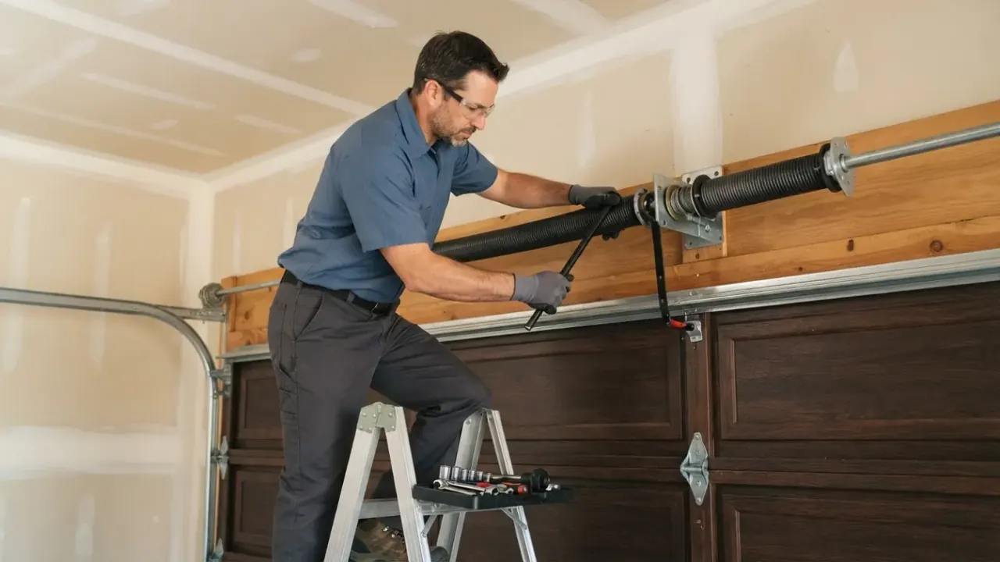

Your local Harbour Island garage door repair team
Garage Door Repair in Harbour Island Done Right the First Time
A garage door that will not close is a security problem the same day it happens, and in Harbour Island we treat it that way. Our techs work 33602 regularly, fixing snapped springs, frayed cables, worn rollers and openers that run without lifting the door. We diagnose on site, quote a flat price before touching a bolt, and carry LiftMaster, Chamberlain, Genie and Craftsman parts on the truck. Salt air off the bay works on steel hardware here faster than it does inland, so we check springs, cables and bottom brackets for rust on every visit, not just the part that failed.
24/7 dispatchHarbour Island ZIP codesResidential & commercial
Local system knowledge
Why Harbour Island Calls Us for Garage Door Repair
Harbour Island sits close enough to the water that salt air is part of everyday garage door repair here. It corrodes galvanized cables, rusts bottom brackets and eats into spring coils long before the door looks bad from the street, and a cable that looks fine can snap without warning. We work Harbour Island waterfront condos and Channel District edge and the surrounding streets regularly, and we stock coated hardware, galvanized cables and nylon rollers because the bay climate demands them. Our techs carry torsion spring winding bars, cable drums, winding cones and a sensor alignment tool on every truck, and we stock LiftMaster, Chamberlain, Genie and Craftsman parts, so most repairs finish in one visit. We are a garage door contractor, and every spring replacement meets UL 325 safety standards. Licence number available on request.
Explore Harbour Island services
garage door repairs Tampa FlWhat we see in Harbour Island most often is not one failure but a pattern: springs, cables and rollers wearing together under the same daily use and the same weather. A visit that checks the whole door, not just the broken part, is what keeps the next call from coming a month later.
Services available in Harbour Island
Garage Door Repair Services Available in Harbour Island
Every service below is delivered in Harbour Island by our own techs, not subcontracted out. If you are searching for garage door repair near Harbour Island late at night because the door will not close, we answer and we roll, and most spring, cable, roller and opener jobs finish in a single visit.
01
Garage Door Repair
General garage door repair in Harbour Island covers a door that will not close, one that slams down, or one that will not budge at all. We diagnose on site, show you the failed part, and quote a flat price before starting, so the repair is decided in your driveway, not on the phone.
02Garage Door Spring Repair
When a spring snaps in Harbour Island, the door should not be forced open: it can come down crooked or drop. We secure the door first, fit a matched pair of springs sized to the actual door weight, and check the cables and drums at the same time, because a worn cable often fails next. Salt air near the water speeds up corrosion on springs and cables here, so we check both on every spring call.
03Garage Door Opener Repair
When the opener runs but the door does not move, the fault is usually a stripped gear, a worn drive belt or a dead logic board. We test the unit under load, confirm the fault before replacing anything, and repair or replace only the part that failed. Humidity and salt air wear out opener electronics here, so we test the logic board and sensors under load.
04Garage Door Cable Repair
When a cable lets go in Harbour Island, the door hangs uneven and the opener strains against the imbalance. We fit a new pair of galvanized cables, reset the drums, and test the balance so the door runs level again. Near the bay, cables corrode faster than they do inland, so we look for rust at the drums and bottom brackets on every visit.
05Garage Door Panel Repair
Panel damage in Harbour Island usually comes from a car bumper, a storm-blown branch or a ball game gone wrong. We check whether the panel still seals and runs true in the track before deciding between a repair and a matched replacement.
06Garage Door Roller Repair
Noisy rollers are the most common complaint we hear in Harbour Island: steel rollers grind, nylon rollers crack, and both wear flat spots that make the door shudder. We swap the full set, not just the loud one, so the door tracks smooth and quiet again. Salt air rusts steel rollers here, so we usually fit nylon rollers that hold up better near the water.
Choosing a garage door repair company in Harbour Island
Who is the best garage door repair company in Harbour Island?
The best company is the one that knows the island, stocks the parts, and answers the phone at 2 a.m. We work Harbour Island regularly, carry springs and cables on the truck, and warranty our labor. Ask any company how often they work the island and whether they replace both springs. The answers tell you a lot.
How do I choose a garage door repair service in Harbour Island?
Check for a Florida license, ask what parts they carry on the truck, and confirm they test the safety reverse before leaving. On the island, also ask how they handle tight high-rise garage clearances and parking. A company that works here regularly will have straight answers for all of it.
More than a service list
How We Run Garage Door Repair in Harbour Island
Most garages here sit close to the water, so the first thing we do is check for salt-air corrosion on the springs, cables and hardware, then secure the door before touching anything else. The three patterns below are the ones we see most on this side of the bay.
Salt air corrodes springs, cables and hardware
Steel hardware near the bay rusts faster than it does inland, and the damage is often hidden: a cable can look sound while it is corroding at the drum, and a spring can lose strength coil by coil. Left alone, that corrosion ends in a snap, usually at the worst hour. How we help: We fit galvanized or coated hardware, check bottom brackets, cable drums and spring coils for rust on every visit, and flag parts that are corroding before they fail.
Storm-driven rain gets into tracks and rusts them from inside
Wind-driven rain during summer storms finds its way into tracks and around the bottom seal, and a track that rusts from the inside binds the rollers and wears the opener out. A door that ran fine before a storm can start grinding the week after. How we help: We clear and dry the tracks, check the bottom seal and the door balance after a storm, and clean the track rather than greasing it, so grit does not get trapped inside.
A door that will not close is a bigger risk near the water
Near the bay, a door stuck open is not just an inconvenience: it leaves the house exposed to weather and to anyone passing by, and a storm can arrive before a repair is booked. How we help: We treat a door that will not close as a priority call, secure it first so it cannot fall, then repair the opener, cable or spring that failed.
Early warning signs
Signs You Need Garage Door Repair in Harbour Island
Most garage door failures give a warning first. These are the signs we hear about most often, and what each one usually means.
Daylight or a gap under the closed door
A gap under a closed door, or daylight showing at the sides, usually means a worn bottom seal, a track out of alignment or a door that is no longer level. It lets in rain, dust and pests, and it usually points to a balance or track problem rather than just a seal.
Loud bang from the garage
A loud bang usually means a torsion spring has snapped. The door will feel far too heavy to lift by hand, and forcing it can damage the opener or drop the door crooked. Secure the door, do not try to lift it, and call for a spring replacement.
Door reverses before it hits the floor
A door that starts down and then reverses is usually a safety sensor out of line, a sensor blocked by dirt or sunlight, or an opener force setting that is too sensitive. Check the sensors for dirt and alignment first, and call us if the door keeps reversing after that.
Opener runs but the door does not move
When you hear the motor run and the door stays put, the fault is usually a stripped gear, a broken drive belt or a disconnected trolley. The opener is working, but nothing is connecting it to the door, and running it again only wears the gears further.
Emergencies and availability in Harbour Island
Is there 24/7 garage door repair in Harbour Island?
Yes. We answer the phone around the clock for Harbour Island customers. If your door will not close at midnight, we take the call, talk you through securing it, and dispatch a tech. Night calls get the same parts and the same warranty as a weekday appointment.
Do you offer emergency garage door repair in Harbour Island?
We do. A door stuck open in a hurricane evacuation zone is an emergency, and we treat it that way. We secure the door first, then fix the cause. Storm-related calls get priority, and we run emergency service every day of the year, including holidays.
Clear starting points
Garage Door Repair Pricing in Harbour Island
Most repairs in Harbour Island run $185 to $385 for a single failure like a spring, cable or roller set, and a full hardware rebuild with both springs and cables lands around $450 to $650. A basic tune-up is $95 to $165. Opener repairs start around $150 and go up from there if a gear kit or logic board is needed. What pushes a job higher here is corrosion. A rusted cable often means the drums need attention too, and a door that has been sitting in salt air may need hinges and rollers replaced at the same time. We quote the full job before we start, and we do not add line items you did not approve. If you want affordable garage door repair in Harbour Island, ask us for a straight answer on repair versus replace.
Phase 01
Door weight is the main driver here: a light single door and a heavy double door take different springs, different labour and different time. We weigh the door on the visit and size the springs to it, so the price you are quoted is the price for your door.
Phase 02
The condition of the rest of the hardware also moves the price: worn cables, a bent track section or a tired opener add parts and time, while a door whose hardware is still sound costs less to put right. We check the full assembly on the visit and quote the whole job, not just the part that failed.
Phase 03
A single-car door uses lighter, cheaper springs than an oversized double door, and a heavy insulated door costs more to spring properly than a light steel one. We size springs to the actual door weight, not to a generic chart, and we tell you the number before we start.
Garage door repair costs in Harbour Island
How much does garage door repair cost in Harbour Island?
Most repairs in Harbour Island run $185 to $385 for a single failure like a spring, cable or roller set, and a full hardware rebuild with both springs and cables lands around $450 to $650. A basic tune-up is $95 to $165. Salt air corrosion on the island often means a cable job includes new drums, which adds to the total. We quote the full job before we start.
We know the route
Navigating Harbour Island: Landmarks We Use
Knowing the route matters when the schedule is tight. The landmarks below are the ones we use to orient a truck in Harbour Island, so mention the nearest when you call.
Harbour Island Bridge
The bridge is the only road onto the island, carrying Harbour Island Boulevard across the water from the Channel District. It is the landmark every visit is planned around.
Bayshore Boulevard
Bayshore runs along the water on the mainland side and is the road our trucks use to reach the bridge. Tell us which side street you turn off once you are across.
Amalie Arena
The arena sits just north of the island in the Channel District. On event nights the streets around it fill up, so a visit booked for an event night should be avoided if it can be.
Water Street Tampa
Water Street is the new waterfront district just north of the island. It is a useful reference if your building is on the downtown side of Harbour Island.
Harbour Island service coverage
Is your ZIP on the route?
These are our most frequently served ZIP codes in Harbour Island: 33602. Nearby areas may also qualify, so call if you do not see yours.
Popular neighborhoods: Harbour Island waterfront condos · Channel District edge · Downtown Tampa side · Davis Islands approach
Check my address →
1234
Primary Harbour Island response zoneSame-day response depends on current call volume, technician availability, and required equipment.
Reviews from Harbour Island customers
What Harbour Island Customers Say
★★★★★
“Our garage door cable snapped on a Saturday morning and the door was stuck crooked. They answered the phone right away, told me not to run the opener, and had a tech out by early afternoon. He replaced both cables, checked the springs, and showed me the rust that caused it. Straight talk, fair price, no upsell.”
★★★★★
“I manage a building near the Channel District and we use them for all our garage door issues. They know our garage clearances, they call ahead about parking, and they clean up after themselves. Last month they fixed a sensor problem in under an hour. That kind of reliability is hard to find downtown.”
★★★★★
“Called at 11 p.m. when our door would not close before a storm. They walked me through securing it and had a tech out first thing the next morning. Turned out to be a worn hinge throwing the door off. Fixed, lubricated, and tested. I have already recommended them to two neighbors.”
Outside Harbour Island?
Nearby Cities We Serve From Harbour Island
Distances are straight-line distances, not road distances.

Downtown Tampa
Less than a mile north of Harbour Island. We cover it on the same routes, so a call from there can usually be paired with a Harbour Island job on the same day.
Channelside
Less than a mile northeast of Harbour Island. We serve it from the same trucks, so mention it when you call and we will fit it into the route.
Hyde Park
About 1 mile west of Harbour Island. We cover it on the same routes, so a call from there can usually be paired with a Harbour Island job on the same day.Harbour Island garage door repair local notes
Local Notes for Harbour Island
Harbour Island is a waterfront island community in Hillsborough County, so garage doors here face more salt air and storm exposure than doors a few miles inland.
Storm preparation is worth doing before the season, not during it. Check that the door is braced, keep the tracks clear of debris, and know how to disconnect the opener if the power goes out, so the door can be opened by hand if it has to be. A door that is checked in advance is a door that opens on the first try when a storm is coming.
After a storm, the useful checks are simple: run the door through a full open-and-close cycle, listen for grinding, look at the bottom seal, and check the tracks for debris and rust. A door that ran quietly before the storm and grinds after it usually needs a track clean and a balance check, not a new opener.
Call urgently when the door will not close, a cable looks frayed, or a spring has snapped. We secure the door first so it cannot fall, then repair the part that failed, and we test the balance before we leave, because a door near the water that is left unbalanced will wear its next part out sooner.
Harbour Island garage door repair island condos
An Island of Condos Between Downtown and the Bay
Harbour Island is a small island just south of downtown Tampa, reached by a single bridge, and it is almost entirely condos and townhomes. The garages here are shared parking decks and gated entrances, and the doors work harder than any private garage door in the city.
The typical Harbour Island building has a parking deck below the residences, and the entrance door to that deck is the door that matters most. It is heavy, it cycles dozens of times a day, and when it fails, no one can get in or out. The springs on a door like that carry far more load than the springs on a private door, and they wear out sooner. The signs are the same as anywhere, only faster: the door feels heavy, it drifts down when it should stay up, or it opens unevenly with one side higher than the other. We treat a shared entrance door as an emergency, because a snapped spring can block the whole building until it is fixed. We secure the door first so it cannot fall, then repair the part that failed, and we test the balance before we leave.
The townhomes on the island are the exception, and they have their own pattern. The townhome rows have small private garages, usually a single door at the back of the unit reached by an alley or a shared drive. These doors are often fitted with jackshaft openers that mount on the wall beside the door, because there is not enough headroom for a standard overhead rail. The doors cycle often, because the garage is the main entrance to the home, and the springs wear sooner than the owner expects. We measure the headroom and the side room before ordering anything here, because a standard part often does not fit a townhome garage.
The island's layout shapes every visit. Harbour Island is reached by a single bridge from downtown, and there is only one way on and one way off. That means the truck's route is simple but unforgiving: if the bridge is busy, the truck waits, and if a visit runs long, the next call waits too. We plan the day around the bridge, grouping calls on the island together so the truck crosses once rather than going back and forth. Tell us your building and your nearest cross street when you book, and if your home is on the waterfront side of the island, say so: the waterfront buildings face the bay and the wind, and a door that faces the water needs different attention from one that faces inland.
The salt air is the constant that ties the whole island together. It corrodes cables, pits spring coils and rusts bottom brackets, often without any visible sign until a cable snaps or a spring lets go. We check the hardware for corrosion on every visit, not just the part that failed, and we fit corrosion resistant hardware as standard on island jobs. A door that is checked regularly lasts years longer here than one that is left alone until something breaks.
Harbour Island garage door repair access
One Bridge, One Way On and Off Harbour Island
Harbour Island is reached by a single bridge from downtown Tampa, and that fact shapes every repair visit. There is only one way on and one way off, and the truck's route has to be planned around it.
The bridge carries Harbour Island Boulevard across the water from the Channel District, and it is the only road onto the island. In the morning the bridge fills with residents heading off the island to work, and in the late afternoon it fills with the return trip. A truck that needs to cross at rush hour can wait a long time, so we plan the day to group island calls together and to cross the bridge once rather than going back and forth. If you are booking, a mid-morning or early afternoon slot is usually the quickest, and telling us your building when you book helps the dispatcher group your call with the other island jobs that day.
Once on the island, the streets are a small loop with the condo buildings arranged around it. The waterfront side faces the bay, and the buildings there have views across the water to downtown and to the port. The inland side faces the Channel District, and the buildings there are closer to the bridge. Tell us which side of the island you are on when you call: it places you faster than a building name alone, and it tells the dispatcher whether the truck should approach from the bridge end or work its way around the loop.
Deck clearance is the first thing to tell us about the building itself. Many parking decks on Harbour Island have a clearance of less than seven feet, and a standard repair truck is taller than that. If the truck cannot enter the deck, the parts have to be carried in from the street, which is fine if we know in advance and bring the right equipment. Give us the clearance when you book, and tell us where the truck can park on the street if it cannot enter. Loading hours matter too: many buildings only allow service vehicles during certain hours, and some require notice a day in advance. Tell us the loading hours when you book and we will schedule the visit inside them.
Gated access is the last piece. Most buildings have a gate or a call box, and the code or the escort needs to be arranged before we arrive. Give us the code and the name the call box should ring when you book, and tell us if there are hours when service vehicles are not admitted. We plan the truck around the gate so the visit finishes in one trip, and we bring the parts we are likely to need so a second visit is rarely necessary. The same applies to the townhomes with alley garages: a note about which alley entrance to use is worth more than a phone call from the street.
Your home and access in Harbour Island
Is there only one way onto Harbour Island for a repair truck?
Yes. The island is reached by a single bridge from the Channel District, so we group island calls together and cross the bridge once rather than going back and forth. A mid-morning or early afternoon slot is usually the quickest, because the bridge is busy at rush hour. Tell us your building when you book.
Can you fix the shared parking deck door in my Harbour Island condo building?
Yes. Shared entrance doors are the most common job we do on the island, and we treat them as an emergency when they fail, because a snapped spring can block the whole building. Tell us whether the door is yours or the building's, and whether the building has a manager we should speak to, so the repair is authorised by the right person before we start.
What should I tell you before you visit my Harbour Island building?
The deck clearance, the access point, any gate code, and the loading hours. Some decks have a clearance of less than seven feet, so a tall truck cannot enter, and some buildings only admit service vehicles during certain hours. Give us those details when you book and we will plan the truck around them.
Harbour Island garage door repair shared doors
Shared Garage Doors on a Small Island
A shared garage door on Harbour Island is the whole building's problem when it fails, and the island's size makes that problem sharper. There is only one bridge off the island, and a door that blocks the deck can trap residents until it is fixed.
The most common shared-door failure is a snapped spring. A shared entrance door is heavy, it cycles dozens of times a day, and its springs work far harder than the springs on a private door. When a spring lets go, the door drops or jams, and no one can get in or out until it is fixed. That is why we treat a shared door as an emergency: we secure the door first so it cannot fall, then repair the part that failed, and we test the balance before we leave. If you manage a building and the entrance door is making a noise it did not make before, call before it fails. A door that grinds or shudders is telling you a part is wearing out, and a repair booked in advance is cheaper and faster than an emergency call at midnight.
The second most common failure is the opener. A shared door opener runs all day, and the gears and the circuit board wear out sooner than they do on a private door. The signs are a door that hesitates, reverses for no reason, or only opens part of the way. Those are usually sensor or receiver problems, and they are worth fixing promptly, because a door that reverses unpredictably is a safety problem as well as an inconvenience. We carry replacement receivers and sensors on the truck, and we set the force limits to the door rather than leaving them at the factory default, because a heavy shared door with the wrong force setting can be unsafe.
Keypads and remotes turn over constantly in a building where owners and tenants change. A remote that belonged to a previous tenant can still open the gate, and a keypad code that has been shared too widely is no longer a code at all. We reset remotes and keypads as part of a visit, and we can reprogram a building's access so that old remotes no longer work. If you are a building manager, a regular reset of the access codes is worth scheduling alongside the annual door service, because the two jobs together keep the building secure and the door working.
The maintenance that pays on a shared door is regular and scheduled. A shared door should be serviced at least once a year, and twice a year if it cycles as often as most Harbour Island doors do. The service covers the balance, the springs, the cables, the rollers and the opener, and it catches the wear before it becomes a failure. We offer scheduled maintenance for buildings, with a flat price agreed in advance, so the manager knows the cost for the year and the residents know the door will work. A door that is serviced on a schedule rarely fails without warning, and that is the whole point.
Harbour Island garage door repair storm
Salt Air and Storm Exposure on Harbour Island
Harbour Island sits in the bay, and the salt air here is the main reason doors fail early. It does not announce itself. It works on the metal a little at a time, and the first sign is usually a part that breaks without warning.
The parts that suffer most are the ones that carry load. Cables corrode where they wind onto the drum, spring coils pit and lose strength, and bottom brackets rust where rain splashes up from the driveway. None of that shows from the street, which is why a door that looked fine in spring can drop a cable in August. We check the cables, springs and brackets for corrosion on every visit on Harbour Island, not just the part that failed, because replacing the failed part without checking its neighbours is how a door breaks again a month later. Stainless or coated hardware lasts far longer here, and when we replace a part we fit the corrosion resistant version as standard.
Wind-driven rain is the second problem. The island faces the bay on all sides, and a storm can drive rain sideways under the header and around the side seals of a garage entrance. A door that looks sound can still let in enough water to stain the slab and rust the track from the inside. We fit heavy bottom seals and check the side weatherstripping on every visit, and where the track has already rusted we replace the affected section rather than painting over it, because rust inside a track chews through rollers and makes the door grind within months.
Power cuts are a particular problem for a shared garage on an island. When the power goes out, a door without a battery backup cannot be opened, and residents cannot get their cars off the island. A modern opener with a battery backup keeps the door working through a power cut, which is exactly when you need it most. If your building's door does not have a battery backup, it is worth fitting one before storm season, and we can do it as part of a service visit. The same applies to the gate: a gate that cannot be opened by hand when the power is out is a gate that traps everyone on the island, and that is a problem worth fixing before the next storm.
After a storm, the checks are simple and worth doing in order. Look at the door from outside: is it sitting level, or is one side lower than the other? A door that hangs crooked has usually lost a cable or a spring and should not be run again until it is levelled. Then run it once through a full cycle and listen. Grinding means track or roller damage; a loud bang means a spring has let go. Then look at the bottom seal and the tracks for debris and rust. If anything is wrong, secure the door so it cannot fall and call us. We secure the door first, then repair the part that failed, and we test the balance before we leave.
Storms, salt air and replacement in Harbour Island
How does salt air affect garage doors on Harbour Island?
Salt air corrodes cables, pits spring coils and rusts bottom brackets, often without any visible sign until a cable snaps or a spring lets go. It also gets into opener electronics and safety sensors. We fit corrosion resistant hardware as standard on island jobs and check the cables and springs for corrosion on every visit.
Harbour Island dispatch is ready
Need garage door repair Tampa? Call now
A door that will not close is a security risk, and a snapped spring only gets worse. We answer 24/7, quote before we start, and carry the parts to finish most jobs the same day. Call and we will get a truck moving.
Talk with the local team
Request Harbour Island service
Call, text or email and a real person answers. Tell us what the door is doing, and we will give you a price range on the spot and the soonest arrival window. Most calls placed before mid-afternoon get a same-day visit.